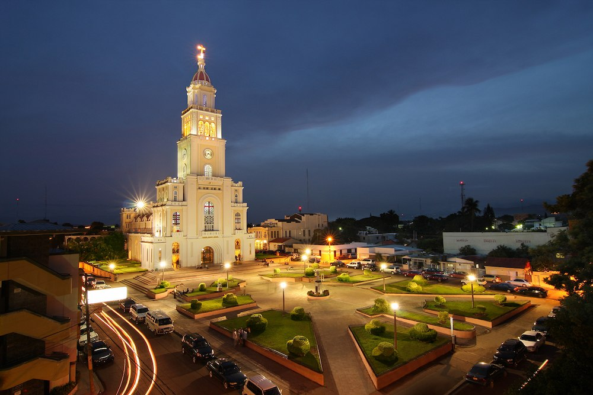

Moca is a beautifull city located at the north of the country in the province of Espaillat, Dominican Republic.
The city was founded on 1780 when people began settling the area in the early 18th century as part of the Spanish colony of Santo Domingo. The area was originally part of the indigenous chiefdom of Maguá before Spanish colonization
